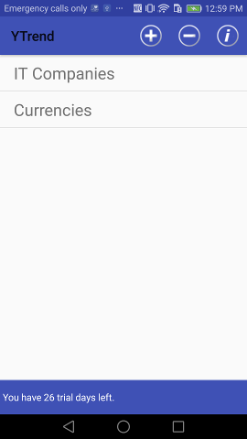
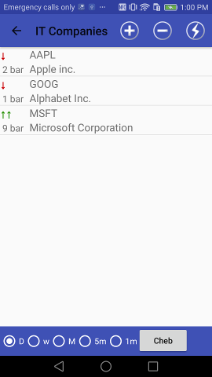
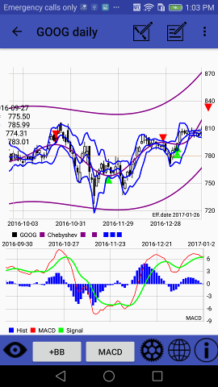
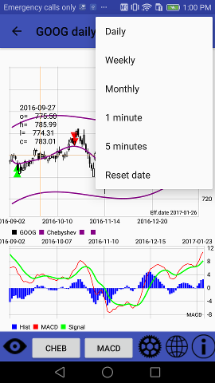

After the app has been started, it enters into Groups selection screen:

User can add new group there by pressing + button or delete group by pressing - button (new form will be appear) Or user can enter into existing group by pressing one of Groups buttons.
i icon provides access to that manual.
Inside group user gets acces to symbols (i.e. indicies, currency pairs, other financial instruments):

He can add new symbols (+ button) by search in Yahoo finance listed symbols. Yahoo driven suggest system (Google driven for Google Edition users) allows to search not only by symbol's name but by it's description substring also.
- - By pressing bolt button user starts data retrieving & recent signals' counting against the current group. After process completion up green or down red arrows should appear left to symbols dending on signal's direction and cell note says on what bar event occurs.
Supersignal users: if last signal is supersignal arrow is replaced by double arrow.
Data feed's & trend's settings are available from the next, Charts, screen.
Pressing on some symbol in Symbols panel leads to Charts panel:

Red and green triangles show signal direction.
Pinch gesture allows to change the chart scale.
Top panel:
It's suitable for backtesting or some period of interest exploration.
- - shows dialog to add/edit symbol's comment;
- - turns to line draw mode:
- Time frames could be changed via menu:

Line draw mode
User can draw lines by fingers in that mode.
Press line draw mode button again to save your line & leave draw mode.
Button under chart allows to add to chart one of classic indicators: MA - upto 6 various MA lines; BB - Bollinger bands; SAR; FBB - Fibonacci Bollinger Bands; Price Channel.
And another button allows to select one of oscillators like MACD, Volume+Chaikin, BB%B, Slow and Fast Stochastic, RSI, CCI, ADX and more
Check Appendix #2 for the full current indicators'/oscillatrs' list.
There are some other buttons on the bottom toolbar:
- - after user set cursor on some date and press eye button, selected date becomes new effective (i.e. last)
- - Market Scanner web app link;
- - indicators settings. By pressing it user will enter into the Settings screen. It allows to tune indicators' settings
Chebyshev Trend indicator parameters description:
Chebyshev trend line is polynom of some order (2 for stright line and more), it's created using a modified Gaussian least squares fit on
certain amount of data (60-200 in the app). The higher polynom order lead to more accurate polynom line.
Lower polynom order lead to more common trend line, 2 for simple line trend for ex.
Amount of data = time frames count taken in account in calculation. The longer it, the more past datas used for polynom calculation.
Some trading ideas
As I said earlier Chebyshev trend line is polynom of some order, it's created using a modified Gaussian least squares fit on certain amount
of data. It's counted & redrawn when new data is available to fit best. So trend line data can be changed in the past &
signals are re-counted too.
I think, it's not fully correct to generate signals based on the trend line, it's mostly for trend visualisation. But many people asked me
about signals & I made it.
I think, there are 2 methods of trade could be:
SuperSignal is developed at last!
A lot of us searched how to improve the app signals quality but most succesfull inventor is Alon Hadar!
And there is a method description as he explains it:
the key is to use only the signals that are paralleled to price touching lower order channels
in the direction of the channels trend only
long = channels are up + price near channel's bottom + chebyshev signal buy
short = channels are heading down + price near channel's upper line + chebychev signal sell
Put attantion that there are 2 variables for the channel that can change ther results - the most important is the polynom order - default is 4
but in some cases the 3/5/6 show better results. The trader should "play" with the channel order to find the channel
that is most reliable meaning that price touch the bands and reverse as much as possible.
The second variable is the standard deviation which default is 2 like bollinger
but in some cases when the security is very volatile you can increase the s.d. to get better results.
The last tip is:
Traders should trade only the signals that are in the direction of the last signal in the higher frame meaning -
if in weekly frame last signal is long they should take all long signals on daily frame and avoid all short signals;
if in weekly frame last signal is short they should take all short signals on daily frame and avoid all long signals.
Also Marcello Djunaidy offers to use Supersignal as an envelope for overbought/oversold indication: buy when below envelope, sell when above envelope
About BB%B oscillator:
Thanks TayJT who offered to implement it. He provided the formula as it was developed by Tradestation members:
BB%B = 100 * ( Price - LowerBand ) / ( UpperBand - LowerBand ) ;
Ken Burkhalter modified it to scale chart from 100/0/-100:
BB%B = 100 * ((Price-LowBand) - (HighBand - LowBand)/2) / ((HighBand-LowBand)/2);
This would more clearly show the deviation of a price from mean value.
More info about Fibonacci Bollinger Bands there:
Fibonacci Bollinger Bands
Good luck!
Appendix2: Full indicators' list.
Top panel indicators:
Bottom panel indicators/oscillators:
From the Settings the next indicators are available: